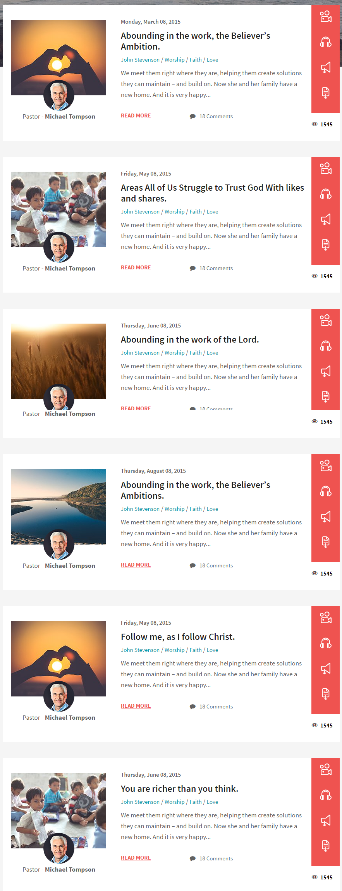
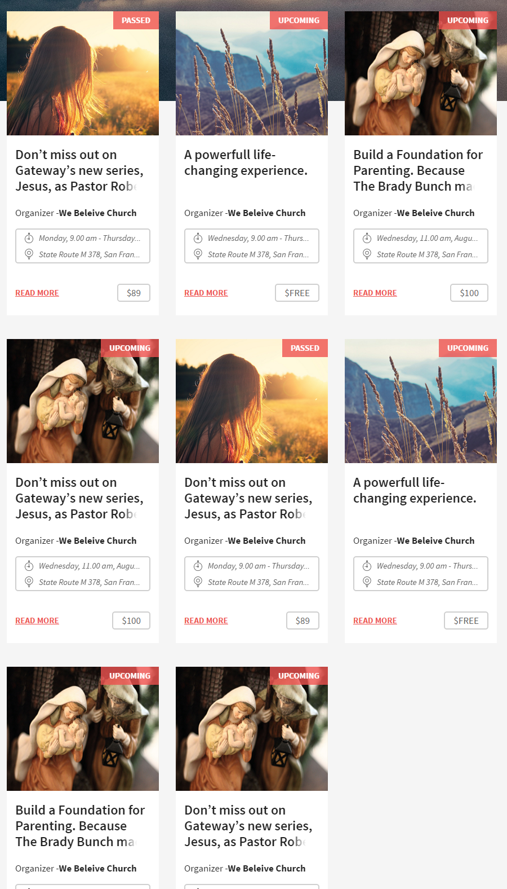
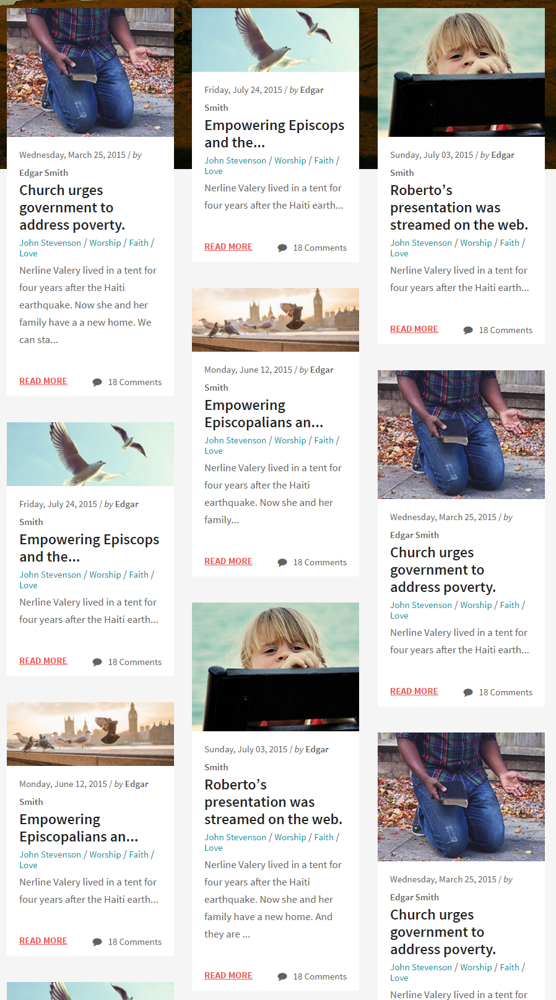

Listing¶
Listing is a special html wrapper, for listing items.
Source¶
Sass styles are in folder
template_src/src/assets/sass/layout/listing.sass .Variations¶
The list of listings:
listing--list- design for list listings.
listing--grid- design for grid listings.
listing--masonry- design for masonry listings.
Example¶
<div class="listing listing--grid">
<div class="listing__item">
<div class="event__item js-event-item">
<...>
</div>
</div>
<div class="listing__item">
<div class="event__item js-event-item">
<...>
</div>
</div>
</div>
Note
Add class js-isotope-grid on listing to make masonry layout.